Introduction
Space games have always intrigued me. Specifically titles like Elite Dangerous, Outer Wilds and
Kerbal Space Program. That's why, as part of my university assignment, I researched and developed a
tool inside Unreal 5 to generate planets. Not just small "gamified" planets, but planets with huge
scales nearing real-life sizes.
Below is a video showcasing the generator in action, generating and updating a planet (same size of
the earth) with some exaggerated noise, biomes and terrain scattering. Quality of the terrain is
dynamically adjusted using the LOD system based on the distance of the camera.
- Scale: Able to generate huge planets using real-life planetary scales.
- Real-time Level of Detail (LOD): Uses a custom LOD system to automatically adjust the quality of the terrain based on the observer distance. Allowing for real-time generation without majorly impacting performance.
- Terrain scatter: A fully configurable, optimized biome-depended terrain scatter. Able to scatter millions of terrain pieces on the surface of planets. Utilizing Unreal's Procedural Generation Framework (PCG) using custom PCG graph nodes.
- Biomes: Planets can be generated with random biomes that have unique colors, terrain scatter and specific terrain noise. Biomes shape the terrain.
- Layered fBM noise: Layers of noise can be stacked on top of each other to fully customize the look of the terrain.
- Determinism: Planet generation is fully deterministic, resulting in predictable random generation when tweaking.
Procedurally generating a sphere
In order to generate planets, the tool first needs to be able to generate a sphere. There are a couple types of spheres that I could choose from. I narrowed my focus on the cube sphere, icosphere and Fibonacci sphere. To make a decision on which type of sphere I wanted to use, I listed the pros and cons of each type of sphere in a table to make it easier to compare them.
Comparing sphere types
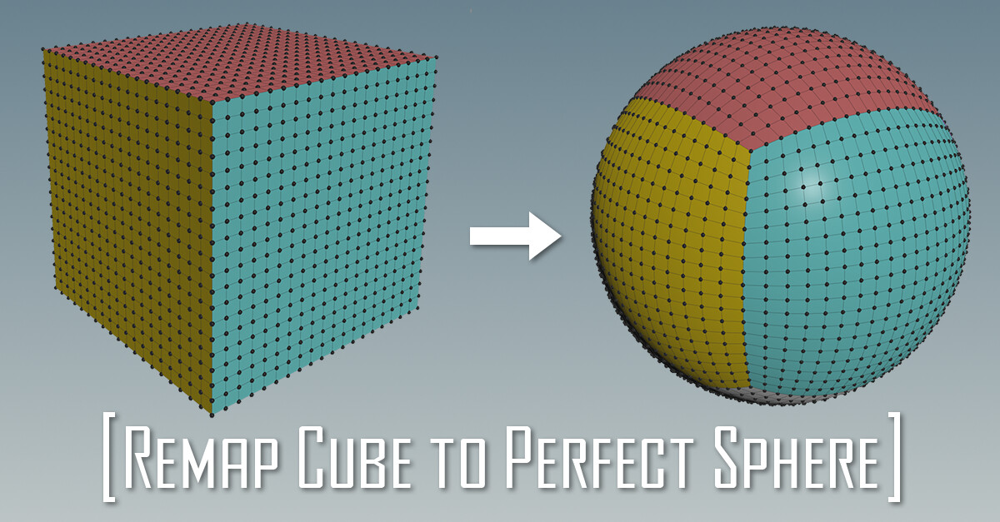
Cube sphere
A cubified sphere simply starts as a normal cube. Then by pulling its vertices toward its center, it will become a nice sphere mesh.| Pros | Cons |
|---|---|
| Could be easier to divide faces into chunks. | There are slight stretching and visible artifacts right along the edges and corners where the six flat planes of the original cube meet. |
| Points are decently uniform on the sphere. | Harder to generate because the points of the original cube have to be projected on a sphere. |
| The number of subdivisions on each face can be increased in small steps. Unlike icospheres where jumps massively increment polygons. | A cube sphere with a lower resolution does not look round. |
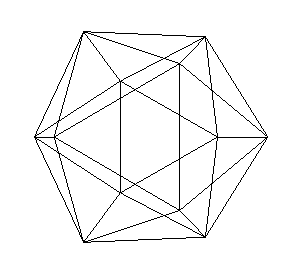
Icosphere
The Icosphere (icosahedron) has twenty sides so it provides the most even vertex distribution of all the options.| Pros | Cons |
|---|---|
| Lacks the pinching poles of standard UV spheres, making it great for displacement, rough terrain, or organic scatter. | When increasing the resolution the triangle count explodes. |
| Keeps a round look even at very low polygon counts, which is helpful for a stylized look. | Standard rectangular maps (world maps) distort badly on an icosphere compared to a UV sphere. |
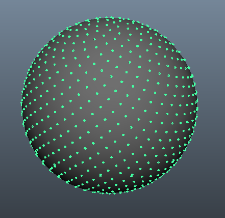
Fibonacci sphere
Using the golden ratio, points are plotted almost evenly across the surface of an imaginary sphere using the golden ratio and spiral patterns.| Pros | Cons |
|---|---|
| Perfect point distribution | Cant directly use for mesh generation because the winding order is all jumbled. Needs to be projected on a plane first. |
| Very cheap to generate because of the straight forward matxhs required. | Has distorted poles, the points near the poles tend to cluster tighter than those around the equator. |
Choosing the cube sphere
After carefully considering all options, I decided to go for the cube sphere. I choose this sphere
because it felt like a robust sphere with decent uniformity. Also the biggest was that I knew I
eventually wanted to implement a Level of Detail system later on which could work nicely with this
because every cube face could be a quadtree that could be used for the LOD's generation.
The only thing I will have to take into account is that I would maybe need to apply some additional
postprocessing to the edges of the cube faces because some visual artifacts could appear where those
edges meet.
This can be seen in the initial implementation inside unreal, if you look closely, you can see the
seam on the edges of the cube faces:
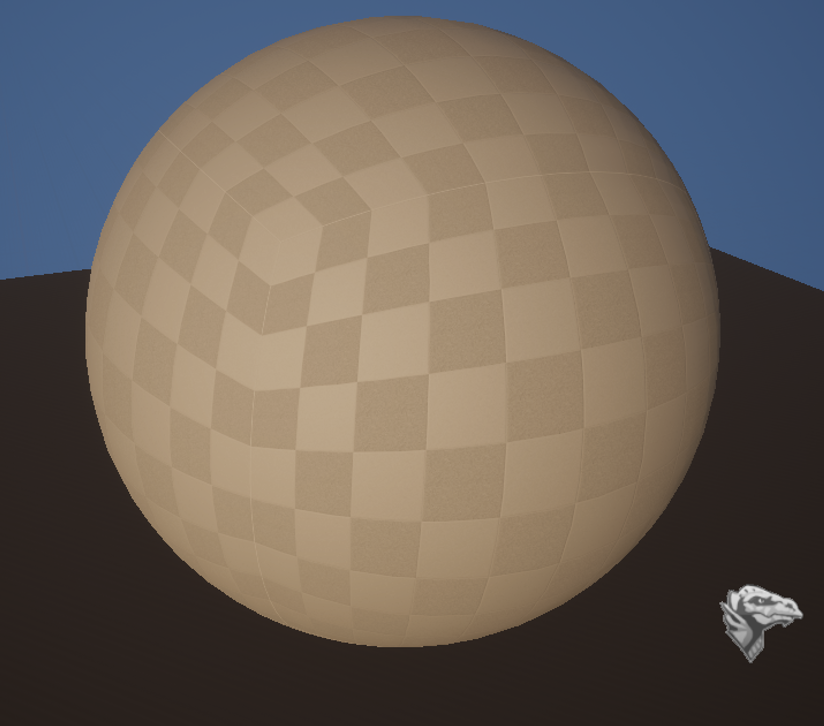
Building the mesh
The sphere is built out of six separate faces, one for each side of the original cube. Every face
is defined by a localUp direction (the direction the face points to) and two axes,
axisA and axisB, that lie flat on the face and are perpendicular to
localUp. Each face is a grid of resolution × resolution vertices, so the
resolution controls how detailed the face becomes.
for (int y = 0; y < resolution; y++)
{
for (int x = 0; x < resolution; x++)
{
int i = x + y * resolution;
FVector2f percent = FVector2f(x, y) / (resolution - 1);
FVector3f pointOnUnitCube = localUp + (percent.X - .5f) * 2 * axisA + (percent.Y - .5f) * 2 * axisB;
// Normalize vector representing point on cube.
pointOnUnitCube.Normalize();
vertices[i] = FVector(shapeGenerator->CalculatePointOnPlanet(pointOnUnitCube));
uVs[i] = FVector2D(percent.X, percent.Y);
// Create triangles.
if (x != resolution - 1 && y != resolution - 1)
{
triangles[triIndex] = i;
triangles[triIndex + 1] = i + resolution + 1;
triangles[triIndex + 2] = i + resolution;
triangles[triIndex + 3] = i;
triangles[triIndex + 4] = i + 1;
triangles[triIndex + 5] = i + resolution + 1;
triIndex += 6;
}
}
}
For every vertex in the grid, I first calculate how far along the face it is as a percentage
between 0 and 1. That percentage is remapped to a range of -1 to 1 and used to offset the point
from the center of the face along both axes, which gives a point on the surface of a unit cube.
Normalizing that point pulls it toward the center so it ends up on a unit sphere.
The point is then
passed to the shape generator, which scales it to the planet's radius and applies the terrain
noise.
FVector3f UShapeGenerator::CalculatePointOnPlanet(FVector3f pointOnSphere)
{
return pointOnSphere * planetRadius;
}
The same percentage is reused as the UV coordinate. Finally, for every vertex that isn't on the last row or column, two triangles are created to form a quad with its neighbors to the right and below.
// Create triangles.
if (x != resolution - 1 && y != resolution - 1)
{
triangles[triIndex] = i;
triangles[triIndex + 1] = i + resolution + 1;
triangles[triIndex + 2] = i + resolution;
triangles[triIndex + 3] = i;
triangles[triIndex + 4] = i + 1;
triangles[triIndex + 5] = i + resolution + 1;
triIndex += 6;
}
Adding noise
A simple noise filter
Now that the tool can generate modifiable spheres, the next step is to apply some 3D noise to the
surface to make it look a little more interesting. To keep the generation framework flexible and
less tightly coupled, I made the NoiseFilter class, specifically used for sampling and
applying noise. This class uses the built-in 3D perlin noise functions from the FMath
dependency.
float UNoiseFilter::EvaluateNoise(FVector3f point)
{
float noise = (FMath::PerlinNoise3D(FVector(point)) + 1) * .5f;
return noise;
}
The noise filter has one job: take a point on the sphere and return a noise value for it. Unreal's
FMath::PerlinNoise3D returns a value between -1 and 1, so I remap it to a range of 0 to
1.
This way the noise only ever pushes the terrain outward and never carves below the base radius of
the
planet. Because the filter only knows about points and noise values, it has no idea it is being used
to shape a planet, which means it can be swapped out, extended or reused elsewhere without touching
any of the mesh generation code.
FVector3f UShapeGenerator::CalculatePointOnPlanet(FVector3f pointOnSphere)
{
float terrainHeight = noiseFilter->EvaluateNoise(pointOnSphere);
return pointOnSphere * planetRadius * (1 + terrainHeight);
}
The shape generator then asks the noise filter for a height at the given point and uses it to push
the vertex outward from its base radius.
Splitting the shape generator and the noise filter into separate classes was an intentional design
decision. The mesh generation only talks to the shape generator, and the shape generator only talks
to the noise filter, so each part of the framework stays independent of the others. This keeps the
system loosely coupled.
All this work resulted in something that already started to look a
bit like a planet:
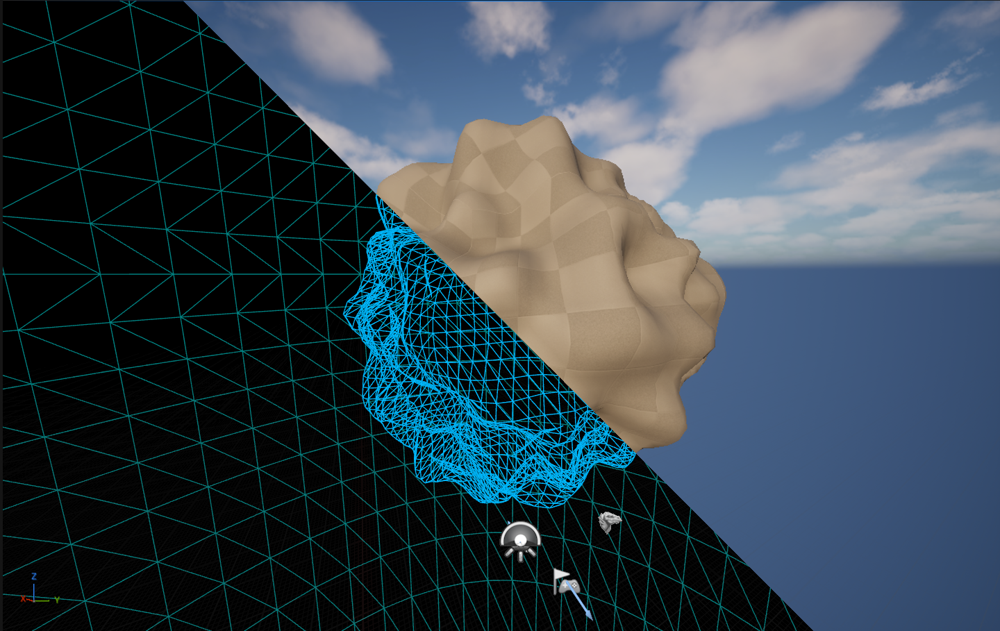
Fractal noise
To make it look even more interesting, I wanted to add the ability to stack different layers of fractal noise on top of each other. To do that, I first needed to sample fractal noise instead of normal noise. Fractal noise (or frequently called fbm noise) can be sampled by multiplying noise maps with different amplitudes, frequencies and persistence's.
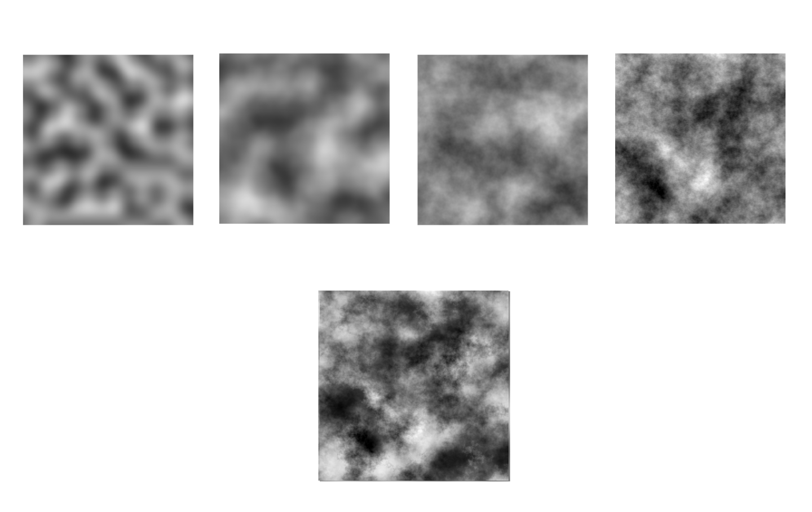
In terms of the code implementation, this means I loop over the octave count and sample noise. On every sample, the specified frequency, amplitude and persistence gets added in different ways to transform each level of octave just like in the image shown above; noise samples with different fractal settings get overlapped to a final noise map. Resulting in having the ability to tweak both the broader and the finer details.
float UNoiseFilter::EvaluateNoise(FVector3f point, FNoiseSettings noiseSettings)
{
float noiseValue = 0;
float frequency = noiseSettings.baseRoughness;
float amplitude = 1;
for (int i = 0; i < noiseSettings.octaves; i++)
{
float perlin = FMath::PerlinNoise3D(FVector(point * frequency + noiseSettings.center));
noiseValue += (perlin + 1) * .5f * amplitude;
// Every pass, frequency gets multiplied against the roughness.
frequency *= noiseSettings.roughness;
// Every pass, frequency gets multiplied against the persistence.
amplitude *= noiseSettings.persistence;
}
noiseValue = FMath::Max(0, noiseValue - noiseSettings.minValue);
return noiseValue * noiseSettings.strength;
}
This is a major improvement from just using 1 single noise map to shape the terrain. Planets can now have more intricated surfaces.
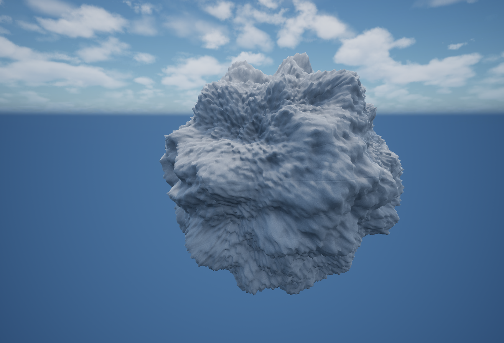
To stay structured, I moved all these new config settings to data assets so they can be saved and swapped in/out to create different planets.
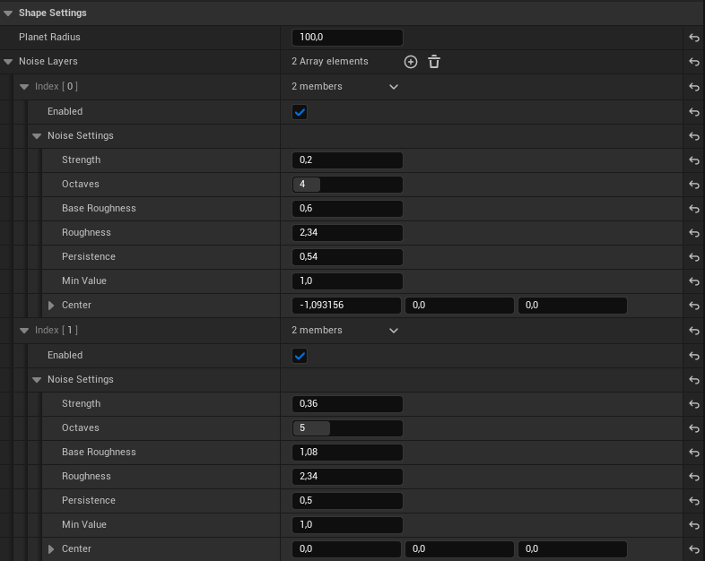
Height-based coloring
Lastly for this stage, to add some colors to the planet, I can fake it with a distance based shader. I used the custom node inside the material graph to write my own HLSL code because that was way easier than trying to make it work with the built-in nodes that are available.
float dist = length(WorldPos - PlanetCenter); // Calculate distance to center of planet.
float height = (dist - PlanetRadius) / (PlanetRadius * ColorSpread); // Calculate planet height.
// Height based colors from water all the way to snow.
float3 oceanColor = float3(0.05, 0.25, 0.55);
float3 sandColor = float3(0.76, 0.70, 0.50);
float3 grassColor = float3(0.20, 0.45, 0.15);
float3 rockColor = float3(0.40, 0.35, 0.30);
float3 snowColor = float3(0.95, 0.95, 0.95);
float3 color = oceanColor; // Start at the ocean color.
// Smoothly lerp the color based on the height.
color = lerp(color, sandColor, smoothstep(0.00, 0.05, height));
color = lerp(color, grassColor, smoothstep(0.05, 0.15, height));
color = lerp(color, rockColor, smoothstep(0.30, 0.50, height));
color = lerp(color, snowColor, smoothstep(0.60, 0.80, height));
return color;
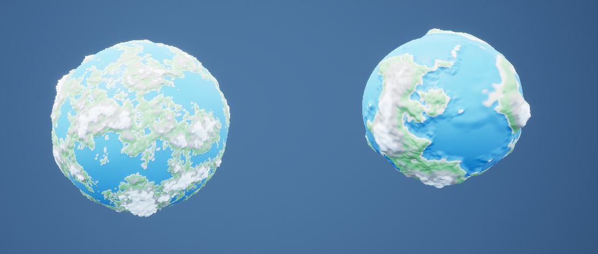
Optimizing the mesh
Up until this point, the planets showcased were all very small (less than 200 units in diameter).
One unit in Unreal is one centimeter. Some extra work is needed to achieve the project goal of being
able to handle huge planets with an appropriate resolution.
If I try to generate a planet that is that huge with a high level of detail on the current setup, it
starts to take multiple seconds instead of milliseconds. Which becomes detrimental
for iteration speed:
CDLOD
While researching techniques to efficiently render large terrain, I came across many YouTube videos referencing a technique called CDLOD. That's how I came across the paper (Strugar, 2010) in which, Filip explains and showcases a technique for "GPU-based rendering of heightmap terrains".
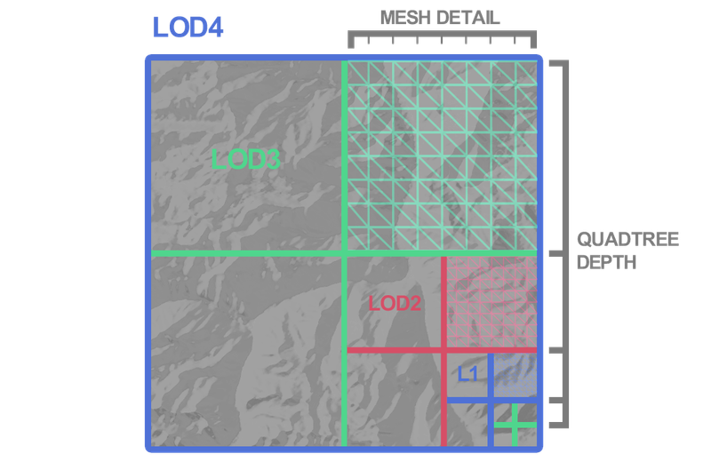
CDLOD Terrain | Svante Lindgren 2020-06-13
Fixed sized grids and quadtrees are the building blocks of this technique. Quadtree are rebuilt every frame, after rebuilding the tree gets recursively subdivided around the position of the observer (usually the camera) while also taking into account the distance from the nodes. CDLOD eliminates traditional artifacts by transforming the "mesh of a higher level into the lower detailed one before the actual swap occurs. This ensures a perfectly smooth transition with no seams or artifacts".
Quadtree
A quadtree is a tree data structure that recursively splits a 2D plane into four child quadrants (NorthWest, NorthEast, SouthWest, and SouthEast). "Points" can be inserted into this structure and depending on the implementation, the quadtree can efficiently query points inside a specific area without having to loop over all points to check.
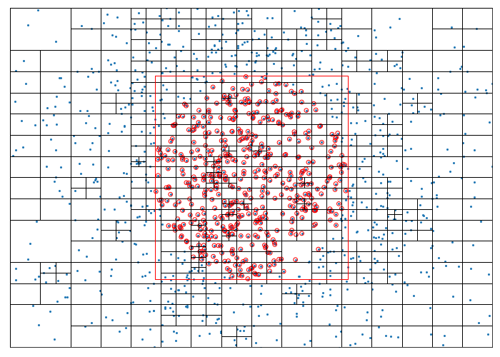
Quadtrees #2: Implementation in Python | scipython.com
A quadtree can be capacity based for example, which means that the tree recursively splits up when the amount of points inside a quadrant exceeds the predefined capacity. Resulting into many tree divisions near areas where a lot of points are. In the real world, this would most likely be used for something like collision detections where the system needs to check if objects are overlapping/colliding.
A capacity-based experiment
To start implementing CDLOD for my planet generator I had to start with quadtrees but at that point I was only really aware about the name (Quadtrees) but had absolutely no clue how they worked and how they could be used. That's why I decided to first try and implement the most basic version in a standalone c++ project.
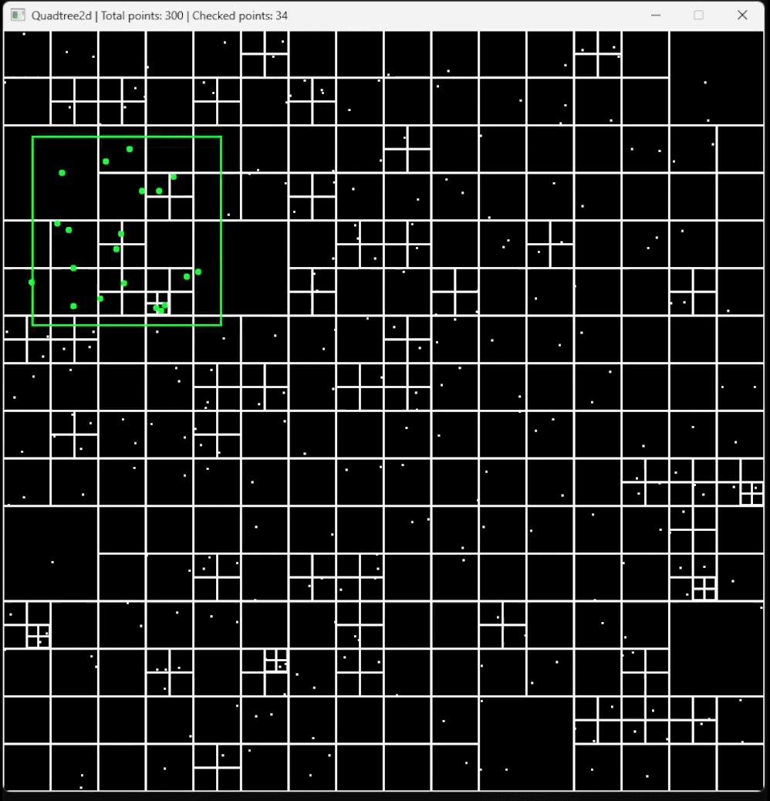
Quadrants with lots of points have more subdivision. The capacity was set to 2 points per quadrant.
In this example there are 300 points inserted in the quadtree. On the first frame, the quadtree
is built which means it subdivides based on the points plotted in the tree. Instead of having to
check all 300 points to see which ones are in my query area (green
rectangle), only a fraction of those total points needed to be checked, dramatically reducing the
the number of checks needed for the result.
In terms of code, when a point gets inserted, the root node (top most node in the tree structure) recursively goes over any quadrants it needs to make sure that the point goes into a quadrant where no subdivision is needed.
bool Quadtree::Insert(Point& point)
{
// Only continue if the point is inserted into this quadrants boundary.
if (!boundary.Contains(point))
return false;
// If this new point doesn't exceeds the capacity, add it to this quadrant and return true.
if (points.size() < capacity)
{
points.push_back(point);
return true;
}
else
{
// If this quadrant is a leaf node (node without children) it can subdivide.
if (!divided)
Subdivide();
//Resursively insert point untill a point is successfully inserted somewhere.
if (childNw->Insert(point)) return true;
else if (childNe->Insert(point)) return true;
else if (childSe->Insert(point)) return true;
else if (childSw->Insert(point)) return true;
}
return false;
}
This little experiment was vital for my understanding on the actual applications for quadtrees. This was then quite easily ported to unreal, the only parts I had to swap out, were `std::vectors` for Unreal's `TArray` and the debug drawing.
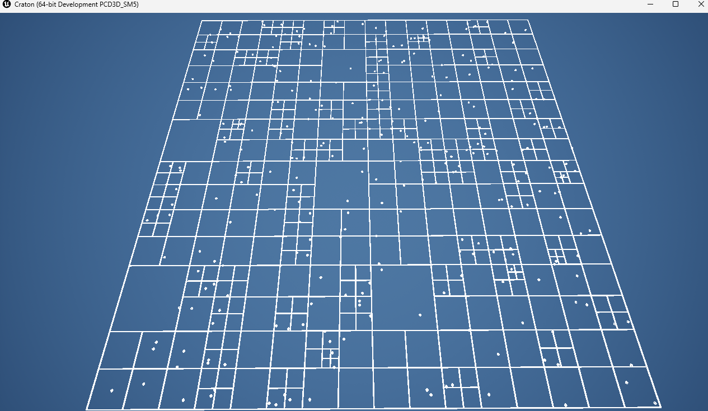
Quadrant experiment ported over to Unreal 5.8.
Subdividing around the observer
At first I wasn't sure how to adapt the quadtree to be able to work with terrain instead of being capacity-based as shown in the experiment above. After some further researching I came across a fantastic video series by SimonDev "3D world generation", specifically episode 3 "3D World Generation: #3 (Quadtree & LOD)" where he explained how quadtrees can be used for a terrain LOD system (exactly the piece I wasn't sure about).
These videos in combination with Filip's paper and the basic quadtree implementation experiment
helped my understand how it all should come together.
A few changes were needed to make it actually
work for my application which is terrain rendering. Instead of subdividing the quadtree based on a
"capacity", it needs to recursively subdivide around the area based on an observer (which in this
case is the camera) until the minimum node size has been reached.
void Quadtree::ReBuild(const FQuadTreeLODConfig& settings, const FVector3f& observerLocation)
{
if (ShouldSplit(settings, observerLocation))
{
if (!divided)
Subdivide();
childNw->ReBuild(settings, observerLocation);
childNe->ReBuild(settings, observerLocation);
childSw->ReBuild(settings, observerLocation);
childSe->ReBuild(settings, observerLocation);
}
else
{
Clear();
}
}
Running this, makes it more clear how this can be applied to a terrain mesh. The nodes around the "camera" are subdivided recursively, resulting in getting more details up close to the screen and discarding the quality of far away nodes.
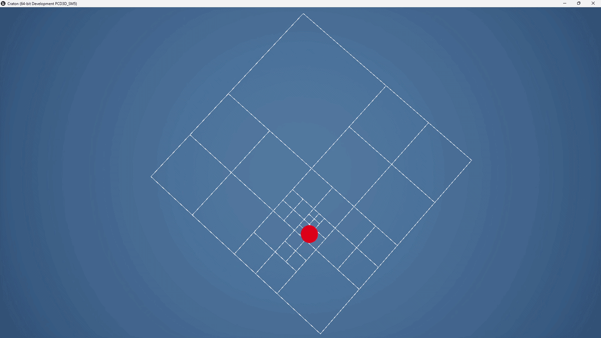
LOD system
The quadtree was now working inside unreal, it only had to be actually implemented into the
planet generation workflow in terms of an Level of Detail (LOD) system. I ended up with the
following workflow:
Every planet is a cube sphere: six faces, each with its own quadtree. Every LOD update follows the
same flow: find the observer (the main camera), rebuild each face's quadtree around it, collect the
leaves, and only build mesh chunks for leaves that didn't exist in the previous update.
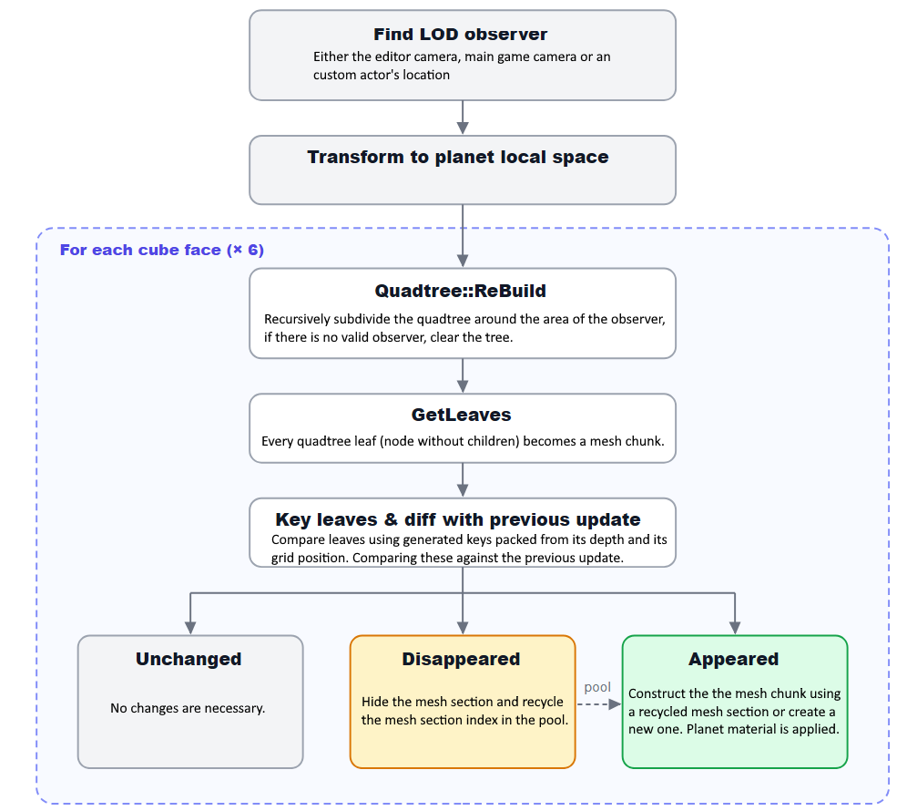
Reusing chunks
Each leaf gets a unique uint64 key, packed from its depth and grid position.
Comparing the new leaf keys against the previous update gives three cases:
- Chunks that stayed the same are left alone.
- Chunks that disappeared are hidden and their mesh section index goes back into a pool.
- Only chunks that appeared are generated, reusing a pooled section when one is available. This way a camera movement only regenerates the part of the planet that actually changed LOD, instead of the whole mesh.
void APlanet::UpdateLod()
{
if (!GetLODActorLocation(LODReferenceLocation))
{
// No valid camera available, assume the location is very far away so the planet still gets its lowest LOD.
const float radius = shapeSettings ? shapeSettings->planetRadius : 1.0f;
LODReferenceLocation = GetActorLocation() + FVector(0.0, 0.0, 100.0 * radius);
}
// Convert the observer to the planet's local space, so LOD still works when the planet moves or rotates.
const FVector3f observerLocal = FVector3f(GetActorTransform().InverseTransformPosition(LODReferenceLocation));
// The sphere is a cube sphere, so it has 6 different sides, each with its own quadtree.
for (int32 faceIndex = 0; faceIndex < 6; faceIndex++)
{
// Get the quadtree and rebuild it around the observer.
Quadtree* root = faceQuadtrees[faceIndex].Get();
root->ReBuild(CreateLodSettings(faceIndex), observerLocal);
// Query all quadtree leaves (nodes without children). Each leaf becomes one mesh chunk.
TArray leaves;
root->GetLeaves(leaves);
// Collect chunks that need to be changed, recycle old ones in the pool.
// Build only the chunks that appeared. Chunks that remain this rebuild are left untouched.
for (const TPair& chunk : desiredChunks)
{
// Check if a node has to be created from scratch or not.
// Construct chunk using the section index for the new desired chunk.
sphereFaces[faceIndex].ConstructChunk(sectionIndex, chunk.Value->GetUvMin(), chunk.Value->GetUvMax(), bCreateNew);
// If chunk was new, assign planet material.
}
}
}
When to split a node
The tree is then rebuilt from the root on every update (when the camera moves). Updating the tree is luckily quite cheap because there is only one observer (the camera). Nodes close to the observer keep subdividing, and nodes that moved out of range collapse their whole subtree back into a single leaf (node without any children). Existing children are kept when a node stays divided, so the tree isn't recreated from scratch each frame.
bool Quadtree::ShouldSplit(const FQuadTreeLODConfig& settings, const FVector3f& referencePosition) const
{
// Hard cap on recursion depth, as a safety net against runaway subdivision.
if (recursiondepth >= settings.maxDepth)
return false;
const float nodeSize = GetNodeWorldSize(settings);
// Stop once the children would become smaller than the minimum chunk size.
if (nodeSize * 0.5f < settings.minQuandrantSize)
return false;
// A node splits when the observer is within a distance proportional to its size.
const float splitDistance = nodeSize * settings.lodDistanceFactor;
return DistanceSquaredToObserver(settings, referencePosition) < splitDistance * splitDistance;
}
The split (subdivide) logic makes the LOD ranges scale with node size: large nodes split from far
away, small nodes only split up close. lodDistanceFactor influences how aggressive this
is.
The distance is measured to the closest of the node's four corners and its center, evaluated on the
actual noise-displaced surface rather than the flat cube face. This keeps mountains from being
treated as further away than they are. Comparing squared distances avoids a square root per node.
Biome generation
Height-based vs. Voronoi biomes
I started researching how other people tackled this. A frequently used technique to quickly get some sort of biomes is generating biomes depending on the height of the terrain (the raw noise values).
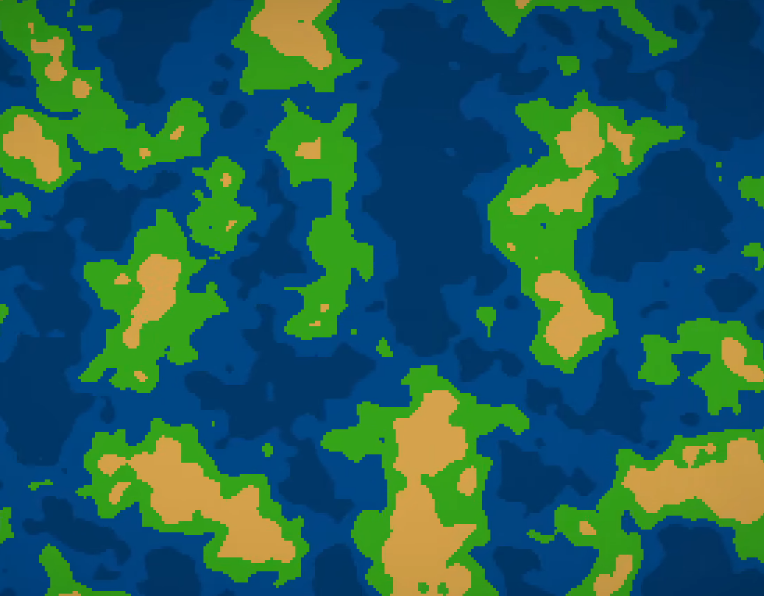
Generating Biomes in a Procedural World - Alex K.
This works fine, but there are a couple problems. The biomes are quite predictible because the same biomes will always generate on certain heights. Also, there is not much room to add different biomes because adding biomes will result in ring shapes because the terrain is derived from the intensity (height) output of the noise, leaving little room.
Voronoi noise is a much better solution, depending on the distribution of points, the biomes are spread around much more interestingly.
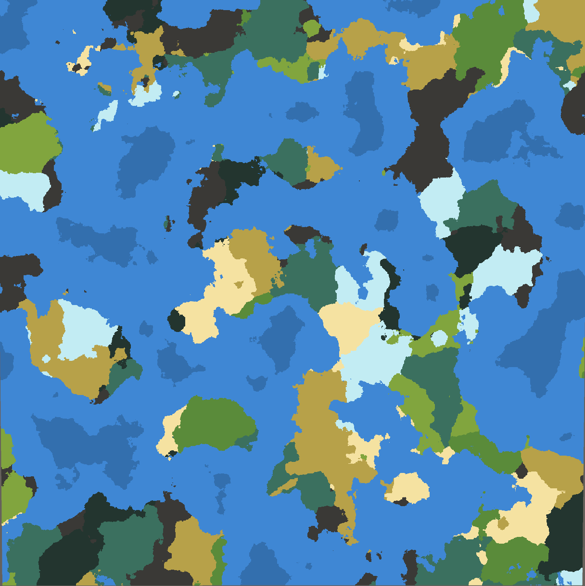
Voronoi biome generation - iph0.
They do have sharp borders, but that can be mitigated by applying some type of smoothing along the borders. This in combinations with a Perlin temperature and/or humidity noise map, can generate hot, temperate and cold biomes in a somewhat realistic manner.
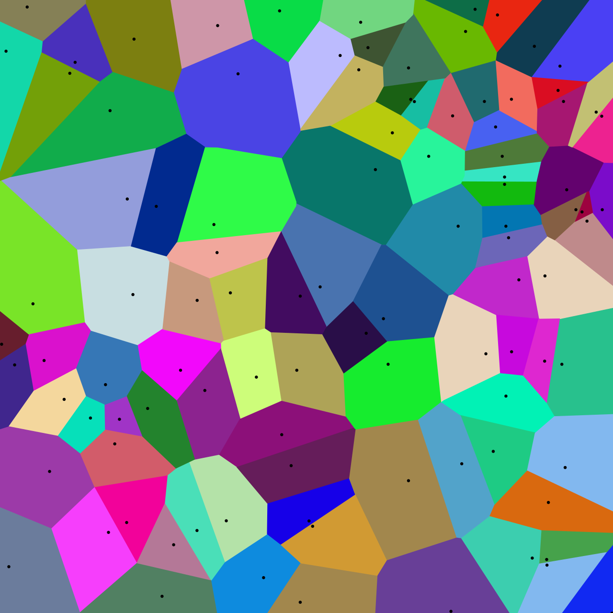
Biomes shape the terrain
Another important consideration will be deciding if i want my terrain to shape the biomes or if the biomes should shape the terrain. When the terrain shapes the biomes, the biomes are more a afterthought, where terrain is generated first and then the system asks "which biome fits on this terrain?".
When biomes shape the terrain, the terrain is an afterthought, the biomes are generated first and based on the biomes, different terrain shapers make terrain.
| Pros | Cons |
|---|---|
| Easier to implement, instead of making multiple "shapers" for every biome type, the system just has a global one and paints biomes afterwards. | Iterating is worse because when tweaking terrain in order for example to make a forest biome generate higher up (altitude), the forest biome disappears because forest biomes spawn on a lower altitude. |
| Easy to blend biomes together since there are no huge changes in the terrain manipulation. | Works much better when having lots of biomes to choose from to create a smooth blending. |
| Better performance, only one shape generator needs to evaluate noise. |
| Pros | Cons |
|---|---|
| Works well even with just a few biomes. | Has visible artifacts on borders of biomes because every biome has its own shape generator. |
| Much more "editable" friendly. When tweaking the biome params, there is no risk of biomes disappearing entirely and makes editing terrain also easier. | Runs much slower, because the noise has to be evaluated multiple times in order to blend the biomes together and fix artifacts that happen on the borders. |
For my implementation, I wanted to to try lean more that biomes shape the terrain. I prefer this method more because I didn't want to have a lot of biomes for the planets. I would like to keep it within scope. Therefore, biome shaping should work better in this instance. The only problems are, that the current terrain shaper might need a rework since the terrain is shaped first at this moment and I might need to deal with those artifacts on the biome borders. I think these problems are fixable though.
Distributing biome cells
Since the planets are spherified cubed, the planet has 6 distinctive sides that are planes. I could project Voronoi/Worley noise to each side. This solves the problem of trying to map one huge noise map to the whole planet.
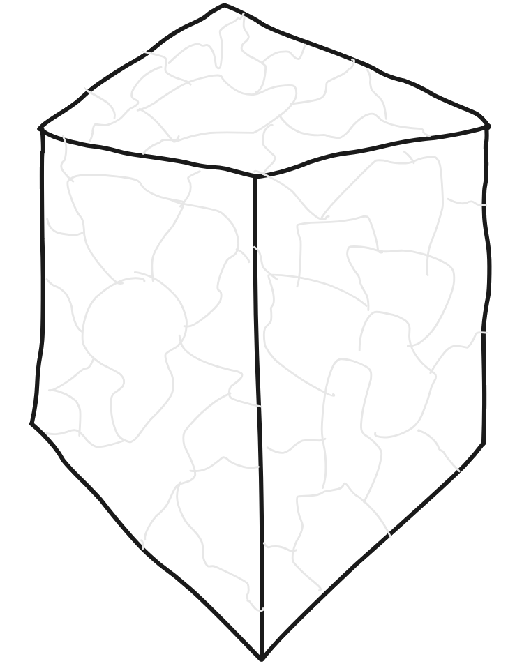
However, I realized this wasn't really is the best solution because this will cause major artifacts on the edge borders. Instead I am planning to sample biome noise based on a Fibonacci sphere since the terrain noise is evaluated separately from the rest of the generation pipeline.
Fibonacci sphere distribution is a technique that uses the golden rule and ratio to plot points
on a sphere with even distribution. Since there is no built-in Worley/Voronoi noise, I am going to
"warp" (apply 3D noise) to these points to simulate a Voronoi type noise cells.
// Fibonacci sphere, Z is the pole axis.
const float goldenAngle = PI * (3.f - FMath::Sqrt(5.f));
for (int32 i = 0; i < shapeSettings.biomeCellCount; i++)
{
const float z = 1.f - (i + 0.5f) / shapeSettings.biomeCellCount * 2.f;
const float r = FMath::Sqrt(1.f - z * z);
const float theta = goldenAngle * i;
FVector3f point(FMath::Cos(theta) * r, FMath::Sin(theta) * r, z);
point += FVector3f(rng.GetUnitVector()) * shapeSettings.biomeJitter;
cellCenters[i] = point.GetSafeNormal();
// Choose biome.
}
This technique works really well for distributing points on the surface of a sphere with even distribution. I do this because I am essentially creating my own type of Voronoi noise, Unreal doesn't have a built-in way to sample Voronoi noise in c++ so what I ended up doing is adding some random noise to these points and kind of warp them until a Voronoi-type noise is created.
Blending biome weights
Using a data asset, the user can easily maintain and tweak values like the amount of biome cells to
generate or the amount of jitter on the distributed points (warp intensity).
When constructing the surface of planets in my main ShapeGenerator.cpp, the
biomes get sampled using weights for every biome.
struct FBiomeWeights
{
float weight[(int32)EBiome::Count] = {0.f, 0.f, 0.f};
float Get(EBiome biome) const { return w[(int32)biome]; }
};
When sampling, the biome weights get populated based on the earlier distributed points on the planet.
// Blending biome results.
for (int32 i = 0; i < cellCenters.Num(); i++)
{
const float dot = FVector3f::DotProduct(pointOnSphere, cellCenters[i]);
const float biomeWeight = FMath::Exp((dot - bestDot) * shapeSettings.borderSharpness);
result.w[(int32)cellBiomes[i]] += biomeWeight;
}
Then these weights get added to the total height, which is the base height (noise height that's separate from biomes) and the biome specific height.
FPlanetSample UShapeGenerator::CalculatePointOnPlanet(FVector3f pointOnSphere)
{
if (shapeSettings == nullptr)
return {};
FPlanetSample result;
result.biomeWeights = biomeGenerator->Sample(pointOnSphere, *shapeSettings);
// Sum up terrain height from all base terrain layers.
float height = EvaluateLayers(shapeSettings->noiseLayers, pointOnSphere);
for (int32 i = 0; i < (int32)EBiome::Count; i++)
{
const float w = result.biomeWeights.w[i];
if (w > 0.001f) // Sum up base terrain height and biome specific terrain height.
height += w * EvaluateLayers(shapeSettings->GetBiome((EBiome)i).detailLayers, pointOnSphere);
}
result.height = height;
result.position = pointOnSphere * GetPlanetRadius() * (1.f + height); // Scale planet up to desired radius.
return result;
}
I find this very exiting because with all this, the user can tweak the noise values of the
specific biomes and as a result the
biomes shape the terrain instead of the terrain being generated first with the biomes being painted
over the terrain as an after thought. Deserts for example can be smooth and hilly while cold biomes
could be sharp and pointy.
Then when construction the mesh for the terrain, I paint the vertices based on the biome.
// Get the sample with the biomeweights.
const FPlanetSample sample = shapeGenerator->CalculatePointOnPlanet(pointOnUnitCube);
// Inside loop..
const int32 i = x + y * resolution; // Calculate correct index.
vertices[i] = FVector(sample.position);
uVs[i] = FVector2D(percent.X, percent.Y);
colors[i] = FLinearColor // Create color buffer using the biomeweights.
(
sample.biomeWeights.Get(EBiome::Cold),
sample.biomeWeights.Get(EBiome::Temperate),
sample.biomeWeights.Get(EBiome::Hot),
sample.height
);
Finally, the mesh gets eather upated or created with the correct vertex color.
if (createNewMesh)
{
targetMesh->CreateMeshSection_LinearColor(sectionIndex, vertices, triangles, normals, uVs,
colors, tangents, false, false);
}
else // If the mesh does not have to be generated from scratch, only update it.
{
targetMesh->UpdateMeshSection_LinearColor(sectionIndex, vertices, normals, uVs, colors, tangents, false);
}
Painting the biomes
When plugging the vertex color directly into the base color of the material, this debug view can be seen. All biomes have their distinctive color range.
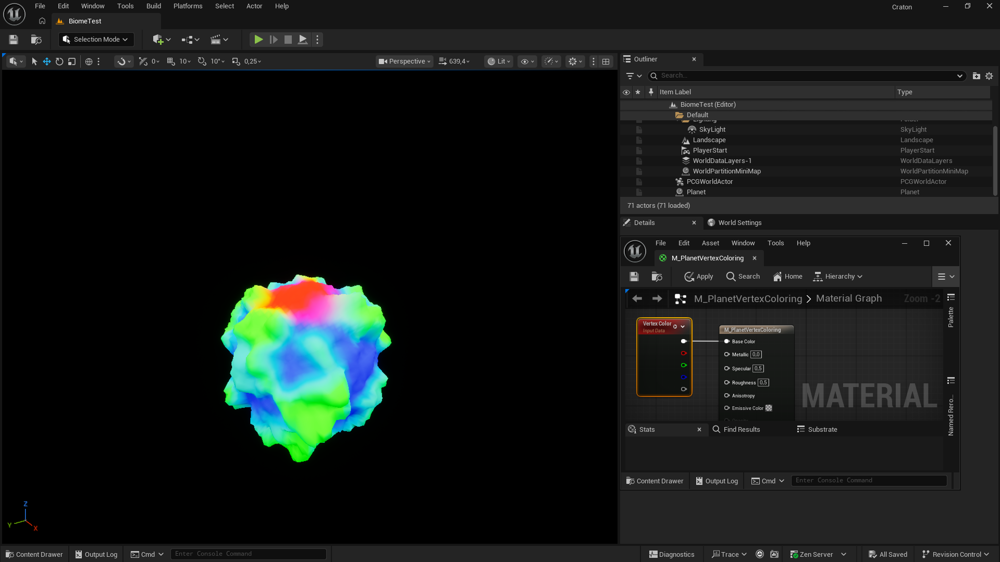
Then I can override the biome colors in the material grahp using this custom shader node. Which
blends height coloring with my biome override colors.
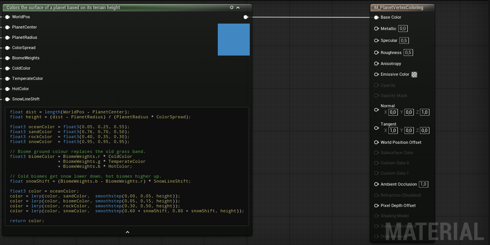
Planet result:
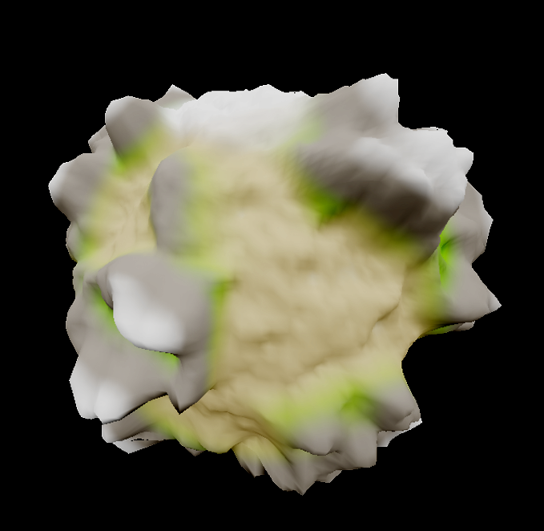
Example planet with smooth hilly deserts, mountainous hills and peaks and rough ice poles.
PCG Terrain scattering
To make the planets even more interesting, I added terrain scatter to the generation workflow. The somewhat naive solution would be to just instantiate models over the surface wherever, but this would run veeery slow and consume lots of precious VRAM. Instead of rolling my own solution, I took a look at Unreal's Procedural Generation Framework (PCG) because terrain scatter is something that would be perfect for this built-in system.
PCG can be used to easily distribute points over a mesh and instantiate (instanced) actors. Distribution of the points can be tweaked further by the use of filters.
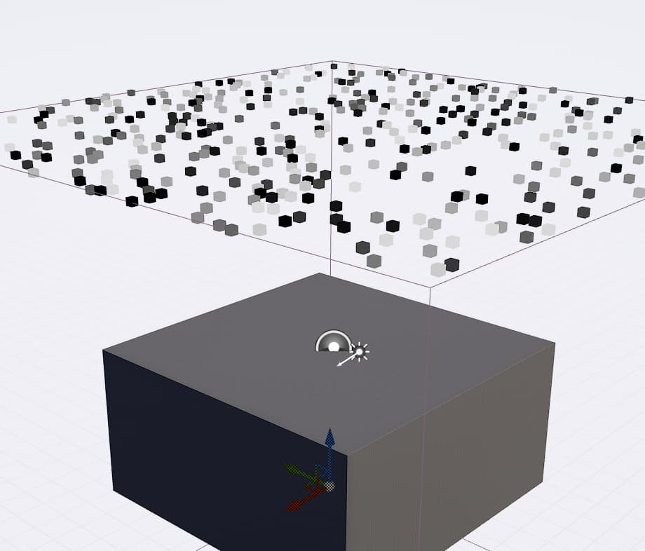
A custom sphere sampler node
Initially I just tried to make a super basic implementation on just a sphere. That is where I realized that out of the box, PCG only works on Unreal landscapes and static meshes. That was a problem since my planets are spherical dynamic meshes. That means the built-in mesh sampler would not work with my planets.
After some more digging I found a reddit forum post about this specific topic. A user answered the
question of creating custom PCG nodes in c++ with that the class UPCGSettings can be
inherited from.
That was exactly the solution I needed so I started writing my own custom PCG node, the
PCGSphereSurfaceSampler.cpp. This custom node samples my planets and distributes points
directly from the planet's internal shape generator. Everything after that (filtering per biome and
spawning meshes) is done with built-in PCG nodes inside a PCG graph. This means the props for each
biome can be changed without touching any code.
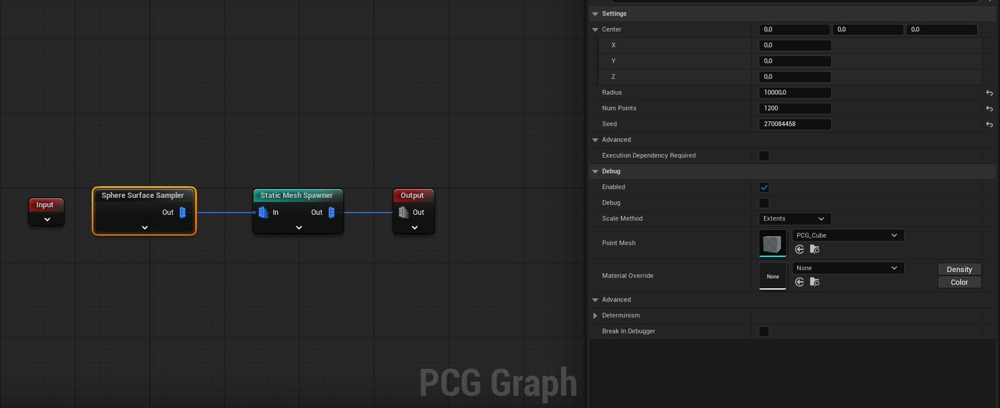
To distribute the points I made use of Unreal's built-in RandomStream which is
a seeded random generator with very even distribution:
// RandomStream for seeded, even randomness.
FRandomStream RandomStream(context->GetSeed());
for (int32 i = 0; i < NumPoints; ++i)
{
// Uniformly distributed unit vector on the sphere.
const FVector Direction = RandomStream.VRand();
const FVector Location = Settings->center + Direction * Settings->radius;
// Rotate the point so its local Z axis points away from the center.
const FQuat Rotation = FQuat::FindBetweenNormals(FVector::UpVector, Direction);
FPCGPoint& Point = Points.Emplace_GetRef();
Point.Transform = FTransform(Rotation, Location);
Point.Density = 1.0f;
Point.Seed = static_cast(RandomStream.GetUnsignedInt());
}
Then using the center of the planet and a random direction I scatter the PCG points around the
surface of the sphere, making sure that the z axis is aligned to the surface of the sphere so that
the spawned actors all "stand up" correctly.
PCG already lets me set things like instancing and automatic culling settings, which makes
it run very fast without using many resources. This results in what you can see in the video down
below, where I scattered 10k points over the sphere with a random chance of spawning a
tree model or a grass model. The cull distance is set quite aggressively to showcase the automatic
culling.
Planet without any noise with PCG terrain scatter (10K points)
Following the terrain height
This worked great, now I just needed to actually take into account the multiple layers of terrain
height generated from the 3D noise. To do that, I changed my custom PCG sampler node logic to
instead of plotting cells based on the size and center of the planet, to use the internal point
calculation CalculatePointOnPlanet(pointOnSphere) from my ShapeGenerator
that is also used by the actual mesh generation of the planets.
This meant that because of this, the points get the exact terrain height the terrain uses. It also doesn't matter whether the chunk underneath has been built yet, or at which LOD level it is, it will always correctly calculate the correct "altitude" for the PCG point.
const double radiusScale = shapeGenerator->GetPlanetRadius() / settings->referenceRadius;
const FTransform planetTransform = planet->GetActorTransform();
// Seeded, so the same seed always gives the same scatter.
FRandomStream randomStream(context->GetSeed());
for (int32 i = 0; i < numPoints; ++i)
{
// Uniformly distributed direction on the unit sphere.
const FVector direction = randomStream.VRand();
// Sample the internal shape generator to exactly match the terrain mesh.
const FPlanetSample sample = shapeGenerator->CalculatePointOnPlanet(FVector3f(direction));
// Calculate correct position.
// Align the model's Z axis to the planet's local up, then spin it around that axis.
// Scale with the planet's radius, with a bit of randomness on top.
// Fetch and initialize point with the calculated transform.
}
This results in the spawned actors correctly spawning on the surface no matter how many or how
intense the noise layer are:
Keeping PCG in sync
I actually ran into some annoying problems here. The problem was that the first generation worked
perfectly but after adjusting some of the noise layers on the planet to make it look different, the
PCG actors disappeared completely. I was quite stumped on what was happening.
It turned out to be that the PCG graph only re-runs when something tells it to. Changing a
value in the shape settings data asset (place where the noise settings live) regenerates the mesh
through the APlanet class but PCG doesn’t know about it. So the fix was to
trigger a PCG rebuild whenever the planet (data asset) changes/updates. I chose to do this via the
GeneratePlanetFromEditor button that was already there for the general generation.
UFUNCTION(CallInEditor, Category = "Planet")
void GeneratePlanetFromEditor();
void APlanet::GeneratePlanetFromEditor()
{
Initialize();
UpdateLod();
RegeneratePCG();
}
void APlanet::RegeneratePCG()
{
if (PCGComponent != nullptr)
PCGComponent->GenerateLocal(/*bForce=*/true);
}
This solution finally fixed the issue, the PCG models now were updating correctly after changing the planet settings to make it look different.
Biome-dependent scatter
Now that I could spawn these a huge number of terrain props on the planet, the next step was to add
the ability to make the spawning of these pieces biome depended. The planets can currently have
Cold, Hot and Temperate biomes.
I ended up using PCG Attribute Sets for this.
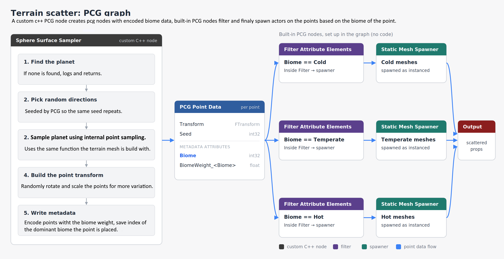
Each point is encoded with its respective biome using attribute metadata. The attributes are
created once per execution: one int32 for the dominant biome, and one
float per biome weight. Each point then gets the index of the biome with the highest
weight.
FPCGMetadataAttribute* biomeAttribute =
metadata->CreateAttribute(TEXT("Biome"), 0, false, false);
// Per point: the biome with the highest weight wins.
int32 mainBiome = 0;
for (int32 b = 1; b < (int32)EBiome::Count; ++b)
{
if (sample.biomeWeights.w[b] > sample.biomeWeights.w[mainBiome])
mainBiome = b;
}
metadata->InitializeOnSet(point.MetadataEntry);
biomeAttribute->SetValue(point.MetadataEntry, mainBiome); // Store main biome enum index.
The raw weights are also stored as BiomeWeight::Biome attributes. The graph doesn't use
them yet, but they make it possible to blend props at biome borders later on, for example lowering
the density where two biomes meet.
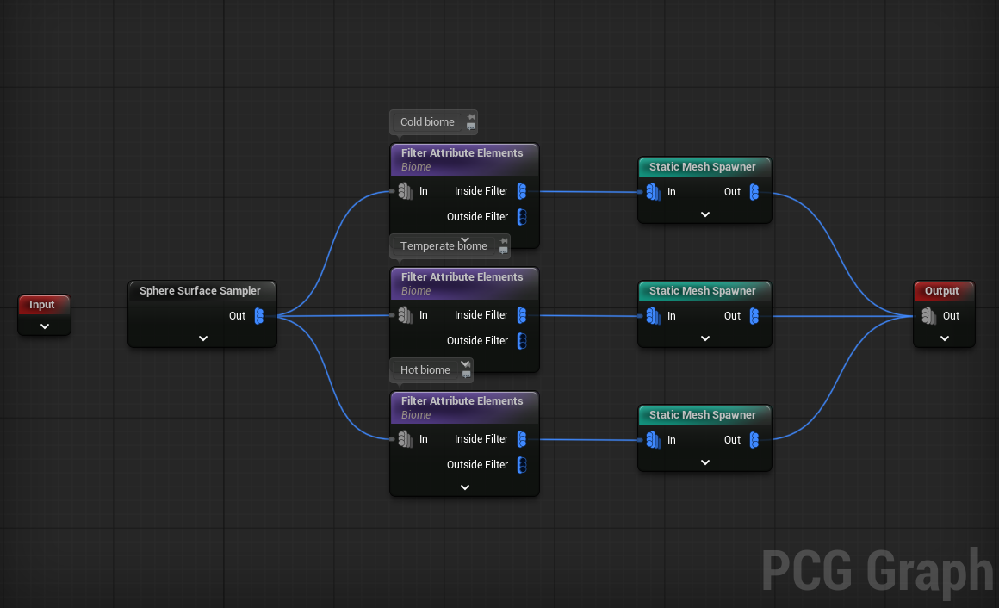
Inside the PCG graph, the output of the Sphere Surface Sampler goes into one Filter Attribute
Elements node per biome, each filtering on the Biome attribute. The "Inside
Filter" pin goes into a Static Mesh Spawner with the meshes for that biome and all
other related settings like culling,the "Outside Filter" pin is left unused, so every point ends up
in exactly one biome "branch". The Static Mesh Spawner spawns its meshes as instanced static meshes
instead of separate actors, which keeps thousands of props cheap to render and makes it possible to
cull the ones that are too far.
Now models spawn in their respective biome, depending on how the PCG graph was setup.
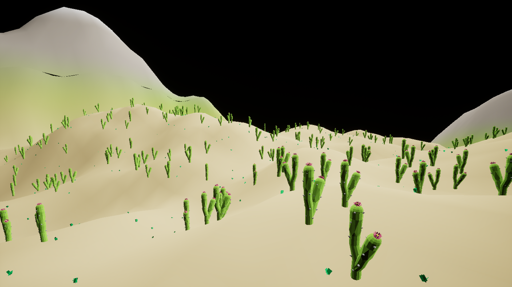
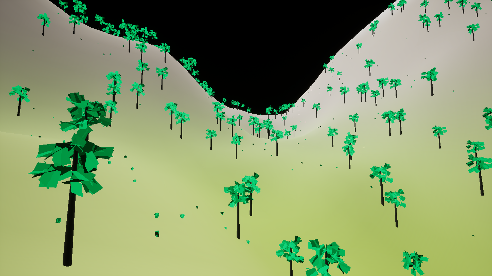
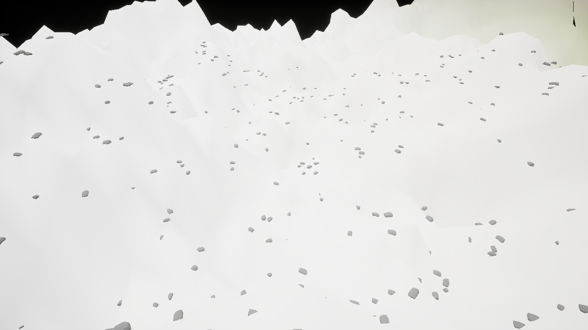
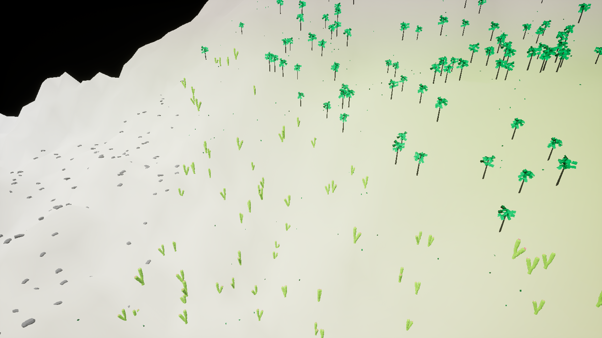
Conclusion
What started as a simple sphere turned into a tool that can generate and render planets at
real-life scales inside Unreal 5. There is still plenty I would like to improve, like smoothing out
the seams along the cube face edges, adding support for custom biomes and a more general features
like an atmosphere shader or even a little solar system generator. Even so, I am really happy with
how far the project came. It taught me a lot about real-time procedural generation, new data
structures and algorithms like quadtrees and LOD systems, fractal noise and working inside Unreal's
built-in systems from C++.
Thank you for taking the time to read this post! I hope it gave you some useful insights or maybe
even inspiration for your own procedural projects.
References
This project was inspired by and built upon the following resources and projects:
- "Generating Biomes in a Procedural World" - A video by Alex K. on how biomes are generated in a procedural world. Watch on YouTube.
- "3 Ways to Scatter PCG Points on a Mesh" - A video by Aziel Arts showing three methods for scattering PCG points on a mesh in Unreal Engine 5. Watch on YouTube.
- "Procedural Generation (PCG) Under 5 Mins" - A quick introduction by Bad Decisions Studio to the PCG framework in Unreal Engine 5. Watch on YouTube.
- Large World Coordinates by Epic Games - Official Unreal Engine 5 documentation on large world coordinates. Read the documentation.
- Voronoi biome generation - Reddit forum post by iph0 sharing experiments with map generation and Voronoi-based biomes. Visit on reddit.
- "CDLOD Terrain" - A technical blog by Svante Lindgren demonstrating a CDLOD implementation. Visit his blog.
- PCG custom node - Reddit forum discussing how to work with PCG in C++. Visit on reddit.
- 3D World Generation by SimonDev - A video series on building a procedural 3D world. Watch the playlist.
- "3D World Generation: #3 (Quadtree & LOD)" - A video by SimonDev covering quadtrees and level of detail for terrain. Watch on YouTube and browse the source code on GitHub.
- CDLOD by Filip Strugar - Continuous Distance-Dependent Level of Detail for Rendering Heightmaps (CDLOD). Visit his GitHub and read about the updated paper.
- "I Found a Better Way to Generate Biomes" - A video by Tantan on an improved approach to biome generation in his voxel engine. Watch on YouTube.
- Quadtree Coding Challenge by The Coding Train - A two-part coding challenge implementing a quadtree from scratch. Watch Part 1 and Part 2.